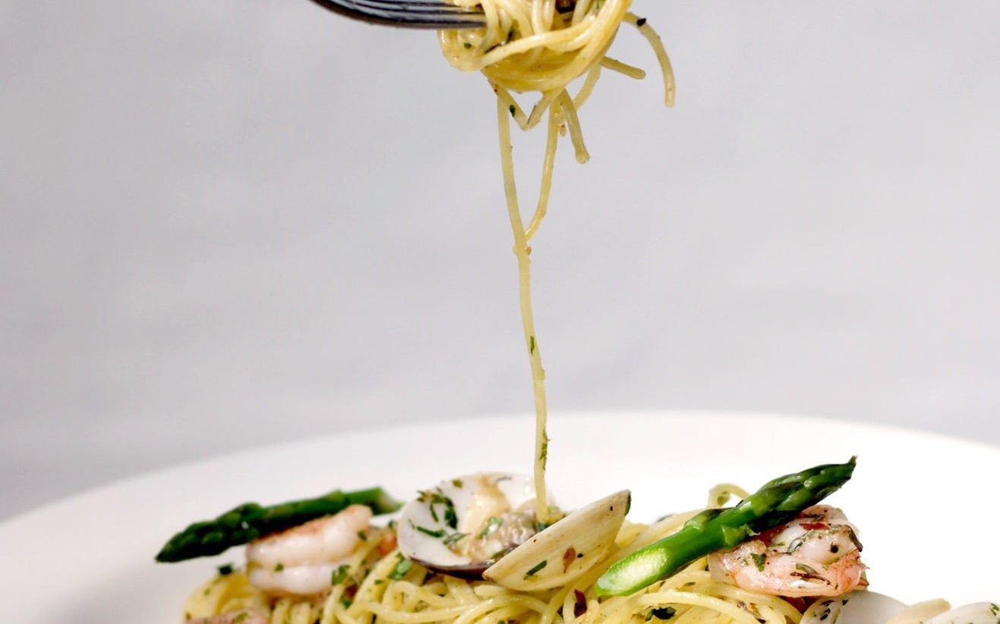

Azul Restaurante Carta
Nuestra carta
Entradas para compartir, cordero, arroces, pescado, pastas y una barra de cócteles y vinos. Precios en pesos colombianos.
Aromas mediterráneos, India y norte de África
Platos pensados para compartir. Los clandestinos, platos únicos preparados e inspirados en ti, se piden en la mesa.
Menú del día
Trilogía de aromas · Almuerzo en Azul con aromas del Mediterráneo, la India y el norte de África.
Nuestra propuesta especial de mediodía: Trilogía de aromas. Incluye cóctel de bienvenida, trío de entradas a bocados, plato fuerte a elegir y postre de la casa. Pregúntanos por WhatsApp para consultar disponibilidad o reservar tu mesa.
Preguntar o reservar el menú del díaBienvenida
Abrebocas especial de la casa para iniciar la experiencia.
Entrada · Trío a bocados · Selección especial de la cocina
Tortilla española clásica con champiñones salteados al ajillo.
Vegetales asados al horno sobre pan artesanal.
Tortilla española con picadillo tradicional de chorizo especiado.
Plato fuerte · Elige una opción
Arroz al estilo de pastoreo preparado con carnes y aromas del campo.
Arroz marinero tradicional con variedad de mariscos frescos y especias de la casa.
Postre
Torta artesanal de la casa elaborada con quesos suaves y manzanas caramelizadas.
Entradas
Berenjena ahumada, menta, tomate, aceitunas negras, queso de cabra.
Pulpo asado, apio, aceitunas negras, aceitunas kalamata, vinagreta de limón.
Pollo, cebolla, jengibre, limones fermentados, leche de coco, especias de la India.
Atún fresco, aceitunas kalamata, aceitunas negras, cebolla roja, tomates secos, salsa tzatziki, especias de la casa.
Garbanzos, chorizo, cerdo, especias de la casa.
Tomates frescos, mozzarella de búfala y albahaca.
Sharing entradas
Entradas para compartir en la mesa, servidas con pan árabe o pan servilleta.
Berenjena ahumada, dátiles, pimientos asados, aceitunas negras, ensalada griega, hummus de garbanzo, labneh, queso feta. Acompañada de pan árabe.
Berenjena ahumada con especias de la casa, acompañada de aceitunas, pistacho, limón en salmuera, labneh, tomates confitados y garbanzos. Servido con pan árabe.
Hummus de garbanzo, baba ganoush de berenjena, puré de calabaza, tapenade marroquí y frutos secos. Acompañado de pan servilleta.
Sopas
Tomates, mozzarella, parmesano.
Lentejas, especias de Marruecos, limón en salmuera, tomate cherry, hierbabuena.
Del campo y ensaladas
Lechugas, cebolla roja, pimentones asados, tomate cherry, aceitunas negras, kalamata, queso feta, ajonjolí, especias de la casa.
Berenjenas asadas, aceitunas verdes, tomate, pesto, albahaca, queso mozzarella y parmesano, champiñones y pan servilleta.
Vegetales encurtidos: pepino, zanahoria, cebolla, rábano y apio, aceitunas verdes y negras.
Lechuga, tomates cherry, champiñones, almendras, uchuvas, aceitunas verdes, queso azul, mozzarella, parmesano.
Carnes rojas
Queso azul, champiñones, puré de papa.
Estofado de vegetales.
Berenjena ahumada, cebolla, tomate, yogur, queso de cabra, parmesano, especias de la casa.
Salsa de champiñones secos en vino blanco y especias de la casa. Acompañado de calabacín asado y tomates confitados.
Pan árabe, carne molida, grasa de cordero, pimienta, tomate, cebolla, aceitunas verdes, pimientos asados, aceite de oliva, mozzarella, parmesano, yogur y papas crocantes.
Arroces
Timbal de conejo con albaricoque y dátiles, sobre arroz cremoso de queso de cabra.
Arroz de mariscos (camarón, calamar y mejillones), con ensaladilla de la casa.
Carnes blancas
Pollo con masala y leche de coco. Acompañado de arroz basmati y almendras.
Pollo, pesto rojo (tomates secos), alcaparras, parmesano. Acompañado de pasta larga.
Cuscús con tomates cherry, berenjena ahumada, aceitunas, dátiles, yerbabuena, especias de la casa y yogur.
De mar
Pescado fresco a la sartén, mantequilla con hierbas mediterráneas. Acompañado de vegetales asados bañados en salsa rústica de tomates.
Trocitos de pescado salteados en cebolla, pimentón, leche de coco, especias. Acompañados de arroz aromatizado en hoja de plátano.
Cebolla, tomate, chorizo español, pimentón dulce y picante. Papas crocantes.
Pastas
Todas se pueden pedir con pasta de arroz.
Aceitunas verdes y negras, alcaparras, tomate, limón en salmuera, yogur, berenjena, hierbabuena, queso fresco.
Tomates cherry, pimentón, aceitunas negras, berenjena, alcachofas, pesto rojo, variedad de quesos. Es una pasta a temperatura ambiente.
Camarones salteados con tomillo, almendras y un toque de limón.
Menú infantil
Tomate, albahaca, queso parmesano.
Clandestinos
Un clandestino es un plato único preparado e inspirado en ti. Si Martha se encuentra, pregunta por los clandestinos.
Reservar y preguntarPostres
Limones en salmuera, frutos rojos y agua de azahar.
Con helado.
Con mousse de maracuyá.
Con yogur aromatizado.
Cócteles y aperitivos
Cócteles
Bourbon, jarabe, Angostura bitter, soda y cereza.
Bourbon, vermouth rosso y Angostura bitter.
Ginebra y tónica.
Ginebra, dry vermouth y aceitunas verdes.
Campari, vermouth rosso, ginebra y naranja.
Tequila blanco, Cointreau y zumo de limón.
Tequila Don Julio añejo, Cointreau y zumo de limón.
Ron blanco, azúcar, limón, hierbabuena y soda.
Ron Zacapa, hierbabuena y soda.
Sin licor
Limón, azúcar, hierbabuena y ginger.
Aperitivos
Digestivos
Shot.
Shot.
Sangría y vinos
Refrescantes
De vino tinto o blanco.
Tinto o blanco.
Vinos blancos
Cava
Vinos rosados
Vinos tintos
Licores
Whisky y ron
Shot.
Shot.
Shot.
Ginebra, tequila, vodka y aguardiente
Shot.
Shot.
Shot.
Shot.
Bebidas y cervezas
Bebidas
Fruta de temporada.
Con gas o sin gas.
Cervezas
¿Reservamos?
Escríbenos por WhatsApp con la fecha, la hora y el número de personas. Si quieres el menú del día, un clandestino o celebras algo, cuéntanos desde ya.
Precios en pesos colombianos (COP) según la carta vigente; pueden cambiar sin previo aviso. Opción vegana: se puede excluir cualquier producto de origen animal. Si eres intolerante o alérgico, avísanos: nuestras recetas contienen frutos secos, harinas, lácteos, mariscos, vegetales, frutas y picante, entre otros. Se prohíbe el expendio de bebidas embriagantes a menores de edad; el exceso de alcohol es perjudicial para la salud. Ver la carta original.